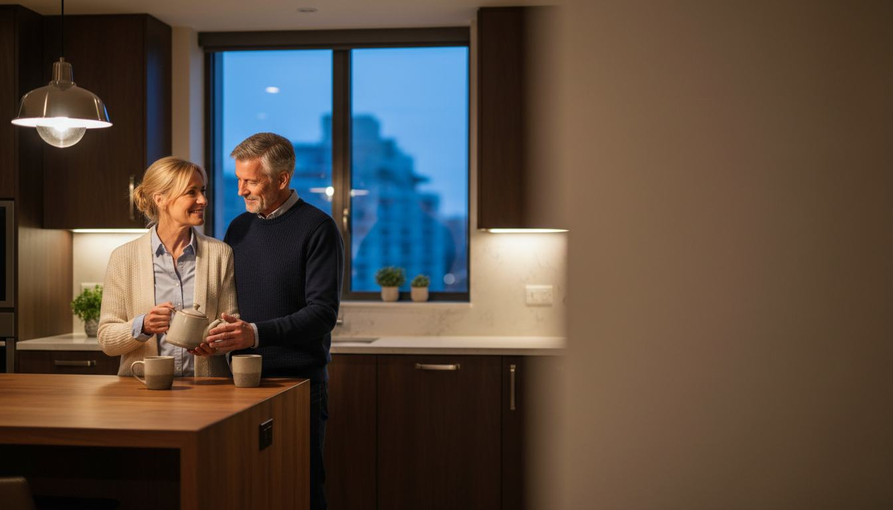
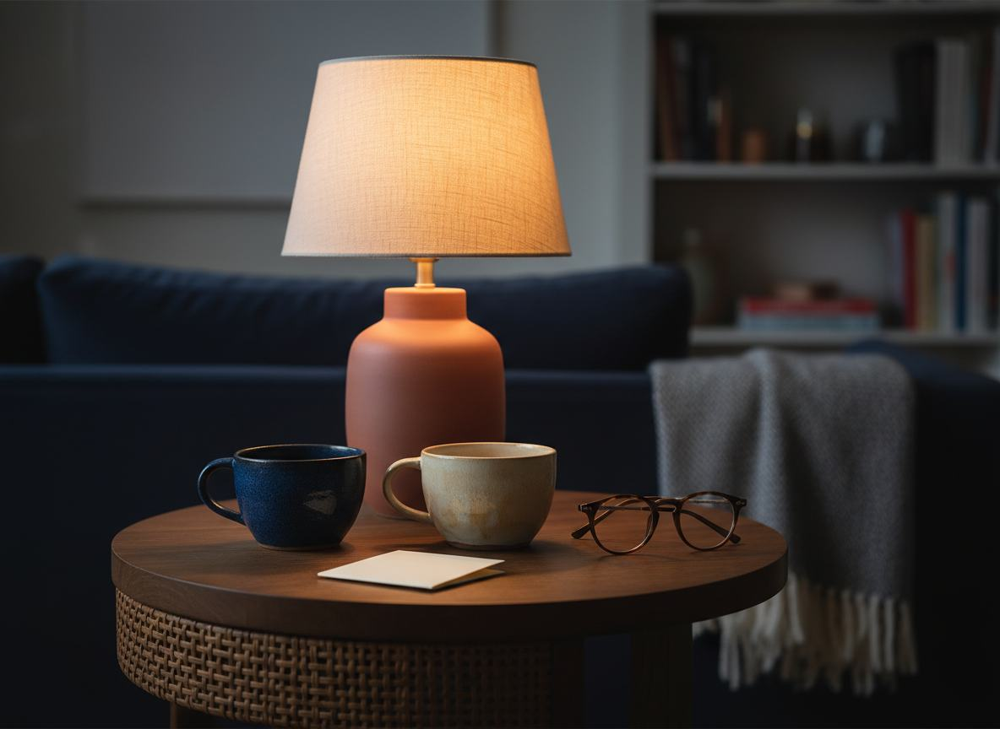

MEZI DVĚMA LIDMI
Někdy si partnerka všimne změny dříve než on sám.
Nejde vždy o velká slova. Někdy se změní jen způsob, jakým se dva lidé večer potkají, jak dlouho spolu zůstanou nebo jak snadno se vrátí k obyčejné blízkosti.
Nové video se dívá na přehlížený detail, který může stát za touto tichou změnou.
PUSTIT KRÁTKÉ VIDEOKrátká redakční úvaha o důvěře, blízkosti a otázce, která často zůstává nevyřčená.

MALÝ ROZDÍL JINÝ POHLED NA BLÍZKOSTBlízkost se někdy mění dříve, než o ní začneme mluvit.
OTÁZKA
Co když nejde o větší snahu, ale o návrat k jedné zapomenuté souvislosti?
Když se něco v partnerské blízkosti změní, mnoho mužů začne hledat složitá vysvětlení. Přitom první stopa může být mnohem obyčejnější a ukrytá přímo v každodenní rutině.
Video otevírá toto téma citlivě a bez velkých slibů. Ukazuje detail, který se snadno přehlédne, ale který může změnit způsob, jakým se na celou situaci díváme.
„Někdy není potřeba říct více. Stačí si všimnout toho, co se změnilo.“PODÍVAT SE NA CELÝ PŘÍBĚH

DETAIL, KTERÝ STOJÍ ZA POZORNOST
To, co partneři hledají, může začít u obyčejného večera.
Dvě šálky. Krátký rozhovor. Jedna myšlenka, která nechává vysvětlení až na videu a dává prostor vlastní zvědavosti.
PUSTIT CELÉ VYSVĚTLENÍReklamní upozornění: Jedná se o sponzorovaný redakční obsah. Externí video může obsahovat nabídku partnera. Na této stránce se nic nekupuje.
Tato stránka slouží pouze k obecným informačním a redakčním účelům. Neurčuje diagnózu, neposkytuje léčbu a nezaručuje žádný konkrétní osobní výsledek.